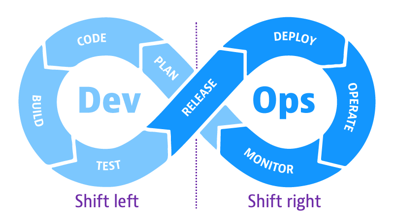

Nos últimos anos, o papel da Garantia de Qualidade (QA) no ciclo de desenvolvimento de software passou por uma transformação significativa. De um papel tradicionalmente focado na “caça a bugs” ao final do processo, o QA evoluiu para uma função estratégica que exige atuação antes, durante e depois da entrega.
É neste contexto de Qualidade Contínua que surgem e se consolidam os conceitos de Shift Left, Shift Right e, mais recentemente, o Shift Everywhere.
Shift Left: Qualidade no Início do Ciclo

O conceito de Shift Left (Deslocar para a Esquerda) propõe que as atividades de qualidade e teste sejam incorporadas nas fases mais iniciais do ciclo de desenvolvimento de software.
Historicamente, os testes eram realizados apenas nas etapas finais, após a maior parte do código estar pronta. Essa abordagem tardia frequentemente resultava em:
- Retrabalho: Defeitos encontrados tarde exigem mudanças mais complexas e caras.
- Custos Elevados: O custo de corrigir um bug aumenta exponencialmente quanto mais tarde ele é descoberto.
- Atrasos: A fase de testes se tornava um gargalo, impactando o cronograma de entrega.
Com o Shift Left, a equipe de QA passa a participar ativamente desde o planejamento e definição de requisitos. Isso inclui ajudar a estabelecer critérios de aceitação claros, regras de negócio bem definidas e cenários de teste logo no início. As metodologias ágeis e o DevOps já reconhecem a qualidade como um esforço contínuo e integrado.
Práticas de Shift Left
| Prática | Descrição | Benefício Principal |
|---|---|---|
| Testes de Unidade e Integração | Desenvolvedores escrevem testes automatizados para seu próprio código. | Detecção imediata de falhas de implementação. |
| Revisão de Requisitos (BDD/ATDD) | QA e stakeholders definem cenários de teste (critérios de aceitação) antes do desenvolvimento. | Prevenção de defeitos e alinhamento de expectativas. |
| Análise Estática de Código | Uso de ferramentas para identificar vulnerabilidades e problemas de código antes da execução. | Melhoria da qualidade e segurança do código-fonte. |
| Participação em Refinamentos | O QA contribui ativamente nas reuniões de grooming e planejamento. | Entendimento aprofundado do negócio e identificação precoce de riscos. |
Benefício Chave: Detectar e corrigir defeitos cedo é significativamente mais eficiente e econômico do que fazê-lo após a entrega em produção.
Shift Right: Qualidade em Produção
O Shift Right (Deslocar para a Direita) complementa o Shift Left, estendendo a mentalidade de qualidade para o ambiente de produção e pós-entrega.
Embora uma suíte de testes robusta seja essencial, apenas o ambiente de produção oferece a realidade completa: o comportamento real dos usuários, a performance sob carga orgânica e a interação com sistemas externos. O Shift Right defende a necessidade de testar, monitorar e aprender continuamente com o sistema em uso.
Práticas de Shift Right
| Prática | Descrição | Objetivo |
|---|---|---|
| Monitoramento Contínuo | Coleta e análise de logs, métricas de desempenho (APM) e erros em tempo real. | Identificar problemas de forma proativa e entender a saúde do sistema. |
| Testes A/B e Canary Releases | Liberação gradual de novas funcionalidades para um subconjunto de usuários. | Validar o impacto no negócio e a estabilidade antes do rollout completo. |
| Chaos Engineering | Simulação controlada de falhas para medir a resiliência e a capacidade de recuperação do sistema. | Garantir a robustez e a tolerância a falhas em cenários adversos. |
| Testes Automáticos Pós-Deploy | Execução de testes de fumaça (smoke tests) imediatamente após a implantação. | Validar a estabilidade básica do ambiente de produção. |
Objetivo Chave: Garantir a confiabilidade contínua, obter feedback real do usuário e transformar a produção em um ambiente de aprendizado constante.
Shift Everywhere: A Cultura da Qualidade Total
Com o amadurecimento das práticas de DevOps e a consolidação da cultura ágil, o conceito de Shift Everywhere (Qualidade em Todo Lugar) surge como a união e a síntese dos dois movimentos anteriores.
O Shift Everywhere estabelece que a qualidade não é uma fase isolada, mas sim uma cultura que deve permear todo o ciclo de vida do software, desde a concepção até a observabilidade em produção.
Nesta visão, a responsabilidade pela qualidade é compartilhada por todos os membros da equipe — desenvolvedores, QAs, Product Owners, e operações.
Onde o Shift Everywhere atua:
- Do Planejamento à Observabilidade: A qualidade é considerada desde a definição do requisito (Shift Left) até a análise das métricas de uso e desempenho em tempo real (Shift Right).
- Da Automação à Análise: Envolve a automação de testes em todos os níveis e a análise contínua dos dados gerados em produção.
- Do Requisito à Experiência do Usuário Final: O foco se expande da simples ausência de bugs para a entrega de valor e uma experiência de usuário excepcional.
Uma baita frase: “Quality is everyone’s responsibility, everywhere, all the time.”
Linha do Tempo: A Evolução dos Conceitos de Qualidade
As transformações nos conceitos de qualidade acompanham a evolução da engenharia de software, migrando do modelo em cascata para as entregas contínuas e do foco estrito na prevenção de falhas para o aprendizado contínuo com o ambiente real.
| Período | Marco da Engenharia de Software | Conceito de Qualidade Dominante |
|---|---|---|
| Pré-2010 | Modelo Cascata, Testes no Final | Pré-Shift Left (Foco na Detecção Tardia) |
| 2010 - 2015 | Popularização do Agile e Integração Contínua | Shift Left (Foco na Prevenção e Testes Cedo) |
| 2015 - 2020 | Ascensão do DevOps e Microsserviços | Shift Right (Foco em Testes e Monitoramento em Produção) |
| 2020+ | Cultura de Qualidade Contínua e Observabilidade | Shift Everywhere (Qualidade como Cultura Compartilhada) |
Conclusão
No cenário de desenvolvimento moderno, a qualidade é um ciclo contínuo, e não um estágio isolado. O papel do profissional de QA se expande para além do teste, abrangendo colaboração, prevenção, medição e aprendizado.
Adotar as filosofias Shift Left e Shift Right é fundamental para abraçar o conceito de Qualidade Contínua. O Shift Everywhere é a manifestação cultural dessa integração, garantindo que cada etapa do ciclo de vida do software seja uma oportunidade para aprimoramento e entrega de valor consistente ao usuário final.